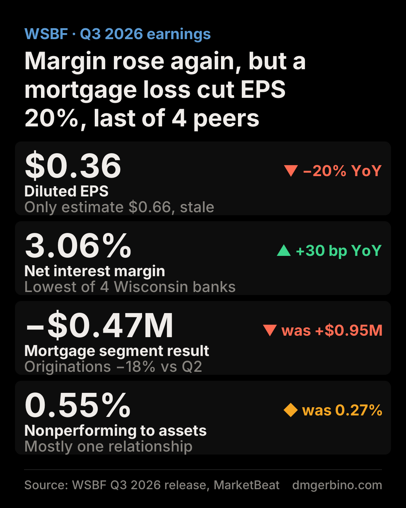

Downloads: Full video, no captions · 60-second cut, no captions · Captions (.srt) · 60-second captions (.srt) · Mobile graphic (PNG) · Mobile graphic (SVG) · Infographic (SVG)
Quarter ended Sep 30, 2026 (calendar Q3). Released Nov 13, 2026, 4:01 p.m. ET. All figures GAAP; Waterstone reports no adjusted EPS.
The only pre-release estimate found was MarketBeat's $0.66. Against it, EPS missed by $0.30 (45%). Treat that with caution: MarketBeat listed the same $0.66 for Q2 (actual $0.49), and its $65.8M revenue estimate is nearly double Waterstone's actual revenue, so the figure looks stale. Waterstone gives no guidance.
EPS came in at $0.36, far below a single-source $0.66 listing
Net interest margin rose for the fifth straight quarter as the cost of interest-bearing deposits fell to 2.95% from 3.19% a year ago while loan yields held at 5.93%. Mortgage originations fell 18.0% from Q2 to $509.7M and the gain-on-sale margin slipped to 3.48%.
Against three Wisconsin banks that reported the same calendar quarter, Waterstone ranks last on revenue growth, EPS growth, margin and efficiency. Its mortgage business inflates the efficiency ratio; the community banking segment alone ran at 49.6%, better than every peer.
Waterstone gives no numeric guidance and no next-quarter consensus was found. CEO William Bruss said mortgage volume "was hindered by a significant jump in mortgage rates." The chart is skipped.
Net income fell $1.75M from a year ago. Net interest income added $1.68M, but noninterest income fell $3.01M and the provision swung $0.71M higher.
Lower mortgage income erased the gain from net interest income
Waterstone reports GAAP only, so there is nothing to reconcile. Segment view: community banking earned $6.57M (Q3 2025: $6.92M); mortgage banking lost $0.47M (Q3 2025: +$0.95M). The quarter included a $391K gain on selling servicing rights on $121.9M of loans.
Waterstone figures are GAAP, in U.S. dollars, from the Q3 2026 earnings release (GlobeNewswire, Nov 13, 2026, 4:01 p.m. ET). Revenue is net interest income plus noninterest income. Growth rates and ratios were recomputed from dollar amounts. Consensus is pre-release, from a MarketBeat earnings preview with price data dated Oct 13, 2026; the analyst count was not given. Peer data is each bank's Q3 2026 release; the First Business release is a secondary copy. Data was read on Nov 13, 2026.
Not investment advice.